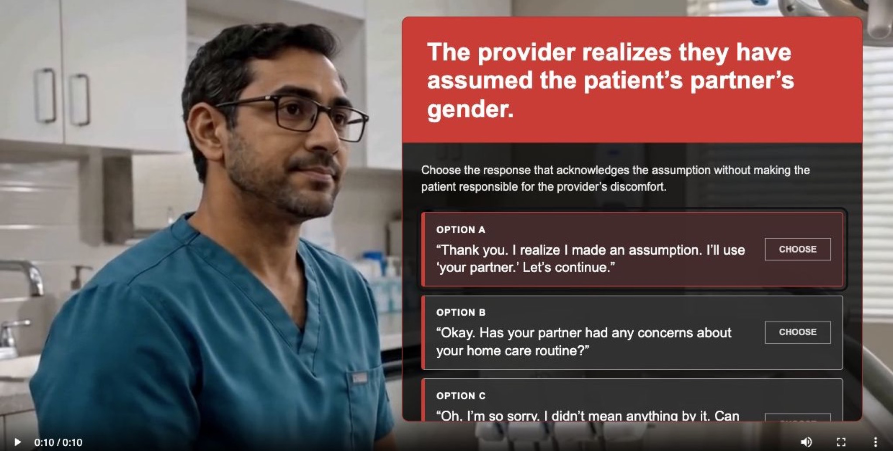
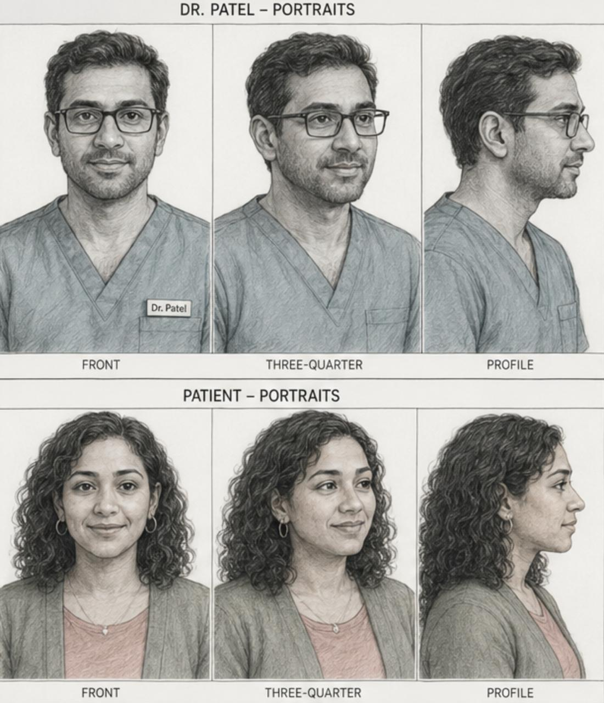

A self-initiated interactive prototype exploring how AI-generated video can be used to create rich, learner-centered healthcare communication practice.
View Live Prototype →
At a Glance
Healthcare communication practice often needs realism, tone, hesitation, and facial expression, but traditional video production can be expensive, slow, and hard to revise.
I wanted to prototype a narrow, emotionally grounded decision moment where a provider realizes they may have assumed a patient's partner's gender and the learner chooses how to respond.
I wrote the scenario, designed meaningful response options, created character references and storyboard direction, generated branch videos with Seedance 2.0, and built a static interactive prototype.
The prototype demonstrates how AI-generated video can support a compact communication response activity when the media is directed by instructional intent rather than treated as decoration.
Overview
This personal project began as an experiment in combining learning design with AI-generated video production.
I wanted to explore whether a short, interactive healthcare scenario could feel emotionally grounded and instructionally useful without relying on traditional video production. Instead of filming actors, booking a clinic location, or assembling a production crew, I created character references, built a storyboard, and used those materials to guide AI video generation in Seedance 2.0.
The learning moment itself is intentionally narrow: a provider realizes they may have assumed a patient's partner's gender, and the learner must choose how the provider should respond.
The goal was not to build a full course. It was to prototype a compact, realistic decision moment and test how AI-generated video could support a richer, more human learning experience than text-only branching scenarios usually provide.
The Challenge
Healthcare communication scenarios often benefit from video because tone, pacing, facial expression, and hesitation all matter. But video production can be expensive, slow, and difficult to iterate.
For this prototype, I wanted to solve two connected design problems: how to help learners practice subtle communication judgment, and how to create enough realism and emotional context without a full video shoot.
The communication challenge was nuanced. Learners were not being asked to recall a rule. They needed to recognize the difference between a response that repairs trust and one that unintentionally shifts emotional labor back to the patient.
My Approach
I treated the project as both a learning design prototype and an AI media workflow experiment. The interaction needed to work instructionally, but the video generation process also had to support consistency, continuity, and believable scenario flow.
The opening interaction creates a recognizable healthcare communication moment. Rather than presenting the learner with an abstract rule about inclusive language, the prototype places them inside a short patient-provider exchange. The scenario pauses at the moment of realization, giving the learner space to judge the next response before seeing the outcome.
The three options were written to represent meaningful differences in communication quality:
Each choice leads to feedback that names the communication pattern and explains why it matters. The feedback avoids shaming the learner and instead focuses on the effect of the response. The intended takeaway is simple: acknowledge briefly, correct language, and continue with care.
I built the experience as a static prototype using semantic HTML, CSS, and JavaScript. The interface includes keyboard-accessible controls, visible focus states, transcripts, status labels, and screen-reader announcements.
AI Video Production Workflow

A major part of this project was figuring out how to use AI-generated video intentionally, not just decoratively.
I created visual references for the provider and patient, then used a storyboard to guide the scene structure, camera framing, and continuity across the setup and response branches. Those references helped Seedance 2.0 maintain a more consistent character and scene across multiple generated clips.
I started with the instructional goal: learners should practice repairing an assumption respectfully.
I developed reference images for the provider and patient so the generated videos would feel like they belonged to the same scenario world.
I mapped the setup, pause, decision point, and branch responses before generating video. This helped keep the media aligned to the learning flow rather than letting the visuals drive the design.
I used the references and storyboard direction to generate the setup clip and branch response clips.
The AI-generated videos became part of a decision-based learning flow: watch, choose, observe consequence, receive feedback.
I adjusted the prompts, overlays, feedback screens, and transcript support so the video served the learner's decision-making rather than overwhelming it.
This process showed me that AI-generated video becomes much more useful for learning when it is directed by instructional intent. The storyboard mattered. The references mattered. The branching structure mattered. Without those, the video might look interesting but would not necessarily support practice.
The Solution
The final prototype guides the learner through a short decision-based experience.
The prototype sits between two related learning formats. It is primarily a communication response activity because the learner is judging person-centered language. It also borrows from scenario-based decision checks because the learner is choosing the best next move in context. With additional linked decisions, it could evolve into a fuller mini case sequence.
Design Decisions
The generated video was used to create context: the clinical setting, the patient-provider dynamic, the moment of pause, and the emotional weight of the provider's response. The learner is not simply selecting a sentence from a quiz list; they are responding to a human moment.
I focused the interaction on a specific repair moment rather than a broad lesson about inclusive communication. The learner has to decide what respectful repair sounds like after an assumption has already happened.
The feedback clarifies why one response works better than another. The strongest response is brief, accountable, and keeps the conversation moving. The weaker responses reveal common communication traps: avoiding the repair or making the patient manage the provider's discomfort.
HTML, CSS, JavaScript, and AI-generated video were enough to support branching, transcripts, feedback states, and deployment. That combination let me create a polished learner-centered experience quickly without overbuilding the platform layer.
Prototype Outcomes
Because this was a self-initiated prototype, the outcomes are framed as design targets rather than deployed learner metrics.
Reflection
This project reinforced that AI-generated video is most powerful in learning design when it is treated as part of the instructional system, not as a novelty.
The most important work happened before generating the clips: defining the learning objective, writing the decision point, creating references, building a storyboard, and deciding what each branch needed to teach. Seedance 2.0 helped produce the media, but the learning design gave the media a job.
It also clarified how thin the line can be between different scenario formats. With the current structure, the experience is best described as a communication response activity. The learner is primarily evaluating language.
But a small semantic shift could make it feel more like a scenario-based decision check. If the prompt asked "What should the provider do next?" and the options were framed as actions rather than spoken lines, the same interaction would emphasize decision-making more than wording.
If I were to iterate, I would add one follow-up decision after the initial repair. For example, after the provider responds, the learner could choose how to continue the conversation in a way that maintains trust while returning to the patient's care needs. That would turn the prototype into a fuller mini case sequence and create a stronger test of how AI-generated video can support linked decisions over time.